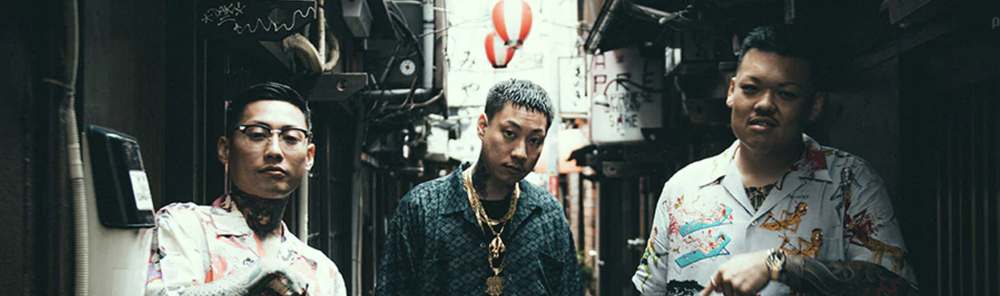
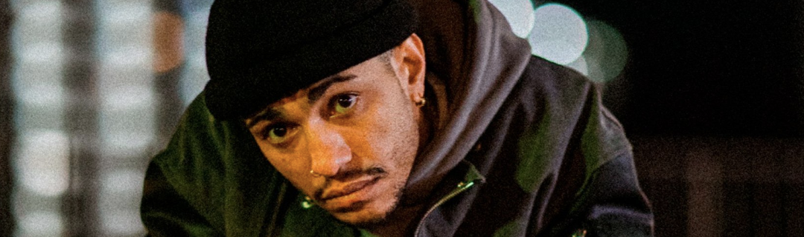
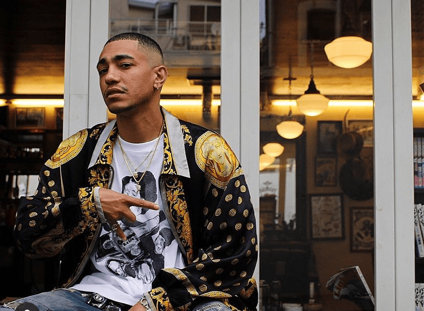
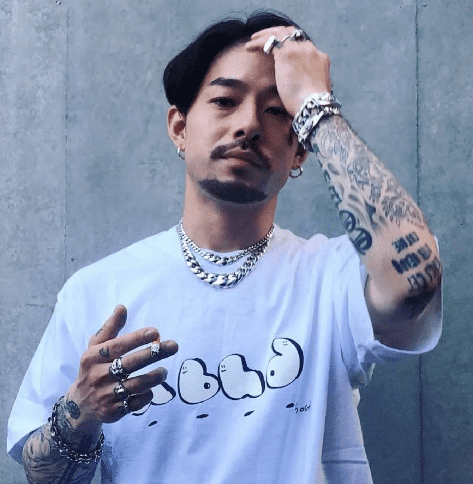
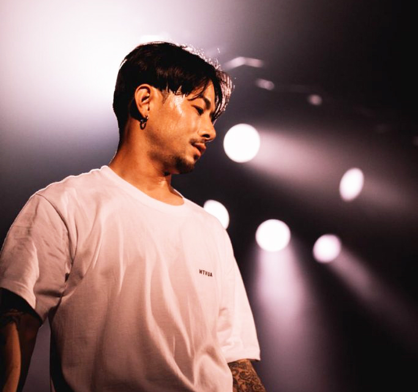
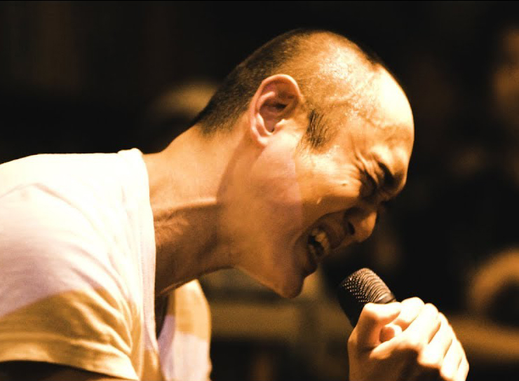
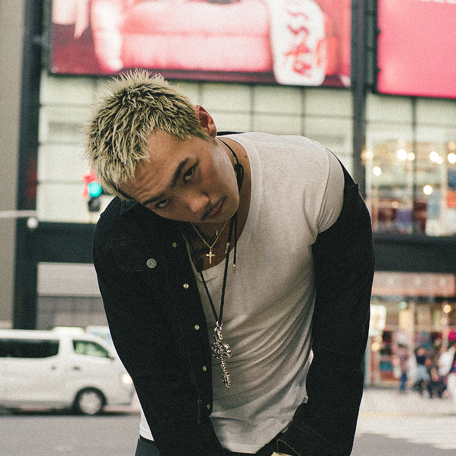

RAPPERS
こちらのページでは
私の好きなラッパー達を紹介しています。
- 舐達麻
-
フレッシュなサウンドとクールなトーンのラップで
ストリートのリアリティを
オブラートに包むことなく
刺激的に描き出すヒップホップクルー、舐達麻。
賽 a.k.a. BADSAIKUSHとDELTA9KIDとG-PLANTSの3人を中心に
“HOT TOWN”こと埼玉県の熊谷で結成された。
彼らの曲はとてもユニークで、
一聴した印象はとても耳障りが良くて心地いい。
トラックは1990年代のヒップホップのマナーを色濃く
感じさせつつフレッシュにアップデートされていて、
ソウルフルなグルーヴの魅力にあふれている。
“ローファイ”や“チル”といったキーワードを使って表現することも可能なサウンドだ。
また、ラップのトーンも抑制が効いていてフロウもスムーズ。
決してラウドにシャウトしたり、奇をてらうようなトリッキーなフロウを使ったりするわけではない。
極めてオーセンティックなスタイルでライムを重ねていく落ち着いたトーンのラップだ。
ただ、そんなラップとトラックに身を委ねていると、淡々と吐き出されるリリックに耳を奪われずにはいられなくなる。
そこで描き出されるのは、刺激的な言葉でつづられるリアルなストリートライフ。
決して過去の武勇伝を大げさにひけらかすわけでもなければ過剰なセルフボースティングというわけでもない。
彼らにとっての日常がクールすぎるトーンで語られる。だからこそ、かえってリアリティの重みが増す。
それこそが舐達麻の真骨頂だ。 もちろん、ラップの聴き取りやすさ、
耳を引くワードのチョイスやパンチラインといったスキルの高さも無視できない。
一聴で頭に入ってくるからこそ、耳を奪われてしまうのだ。
特に派手な仕掛けもなく、決して何かにおもねることもなく、
ヒップホップだからこそ可能な表現を
ストイックに突き詰めたような舐達麻の
ハードコアな世界観はまさに唯一無二。
ヒップホップシーンはもちろん、
日本の音楽シーンでも極めて特異な存在感を放つ
個性派アーティストだ。BUDS MONTAGE / 舐達麻
(prod.GREEN ASSASSIN DOLLAR) - RYKEY DADDY DIRTY
-
ハードコアなストリートのリアリティはもちろん、
過去の過ちすらも荒削りな言葉で
ブルージーに聴かせるラッパー、RYKEY。
八王子出身で日本人の父と
ケニア人の母を持つRYKEYは、
2015年に『Pretty Jones』と『AMON KATONA』の
アルバム2作をリリースして
ヒップホップシーンで注目を浴びた。
ぶっきらぼうに吐き出すようなラップから、
スムーズでメロウなフロウまで巧みに使いこなし、
緊張感あふれるトピックもドラマチックかつ
人間味豊かにラップするスキルの持ち主で、
スキャンダラスな雰囲気すらも魅力に転化できる
稀有（けう）なタレントだ。RYKEYDADDYDIRTY / ALL GODS BLESS ME
- ZORN
-
ZORN（ゾーン、1989年2月16日 - ）
は、日本のヒップホップMC。
東京都葛飾区新小岩出身。
旧名はZONE THE DARKNESS。
生活に根差した等身大のリリックと、
複雑に重ねられる圧倒的な韻が評価されている。ZORN / 家庭の事情
- 神門
-
1986年生まれ、兵庫県神戸市出身のヒップホップMC。 2005年6月より本格的に活動を開始。
翌年にミニ・アルバム『四拾』を自主制作し、
自身のレーベル〈半袖バイブス〉を設立。神門 / Azalea
- YDIZZY
-
1994年生まれ、
東京は渋谷出身のラッパーYDIZZY(ディジー)。
幼少時よりさまざまな音楽に親しむ。
友人たちとの交遊からkiLLaを構成し、
ラップ活動を開始。
2015年に初の音源集『Syndrome』をフリーで公開し、
YENTOWNメンバーとしてのマイクリレー曲
“Seven Sinners”に登場して脚光を浴びる。
2016年にはANARCHYの“NO FEAR”に客演し、
10月にミックステープ『Syndrome II』を配信。
その後、kiLLaごとYENTOWNを離脱し、
12月にkiLLaとしてのファーストEP
『kiLLa EP vol.1』をリリース。
現在も精力的にアルバム製作を続けている。
YDIZZY - Break on ma bed